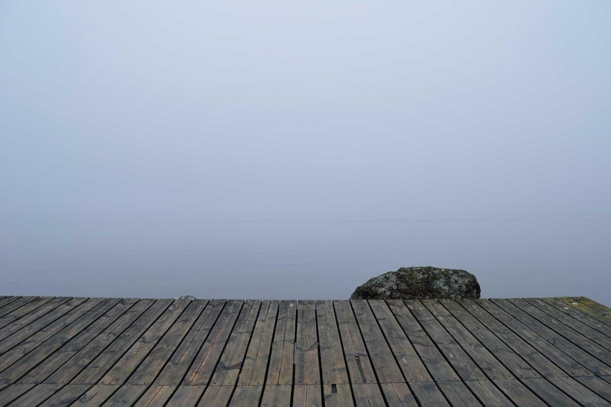

Progeox / Promine
Overview
Progeox es una solución de Promine para geología y minería. Progeox App es una aplicación Android enfocada en mapeo geológico subterráneo, disponible para tablets y teléfonos.
INNOTEC participó en el desarrollo y evolución de funcionalidades de esta solución especializada para mapeo y análisis geológico — sin ser el creador de Promine ni de Progeox como producto corporativo.
El desafío
La industria minera requiere capturar, visualizar y analizar información geológica compleja en entornos de trabajo exigentes — con precisión en campo, soporte para formatos técnicos como DXF y capacidad de generar reportes confiables.
La solución
Desarrollo y liderazgo técnico en funcionalidades de software especializado para mapeo geológico, visualización de datos e integración con bases de datos — orientado a geólogos y equipos de operaciones en minería subterránea.
Funcionalidades (información pública Promine)
- Mapeo geológico subterráneo
- Importación y exportación DXF
- Visualización 3D y rotación de dibujos
- Estructuras geológicas e información de litología
- Captura y visualización de datos geológicos
- Reportes, tonelajes y leyes
- Modelamiento geológico e integración con bases de datos
- Trabajo en tablets y teléfonos Android
Participación técnica
- Desarrollo Android (Java)
- Procesamiento y dibujo DXF
- Frontend, backend y bases de datos
- Sistema de licencias y pagos
- Liderazgo de proyecto en funcionalidades clave
Plataformas
Tecnologías
Capacidades desarrolladas
Experiencia en software especializado de alto nivel técnico para industrias reguladas — demostrando que INNOTEC puede abordar proyectos complejos más allá de sitios web o apps genéricas.
¿Necesitas software especializado para tu industria? Analizamos tu caso y te proponemos una solución técnica.
Hablemos de tu proyecto